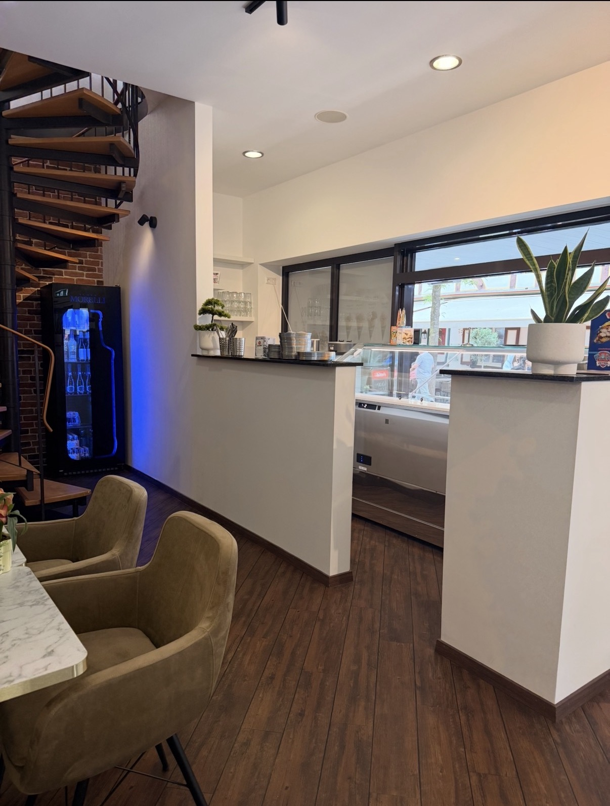
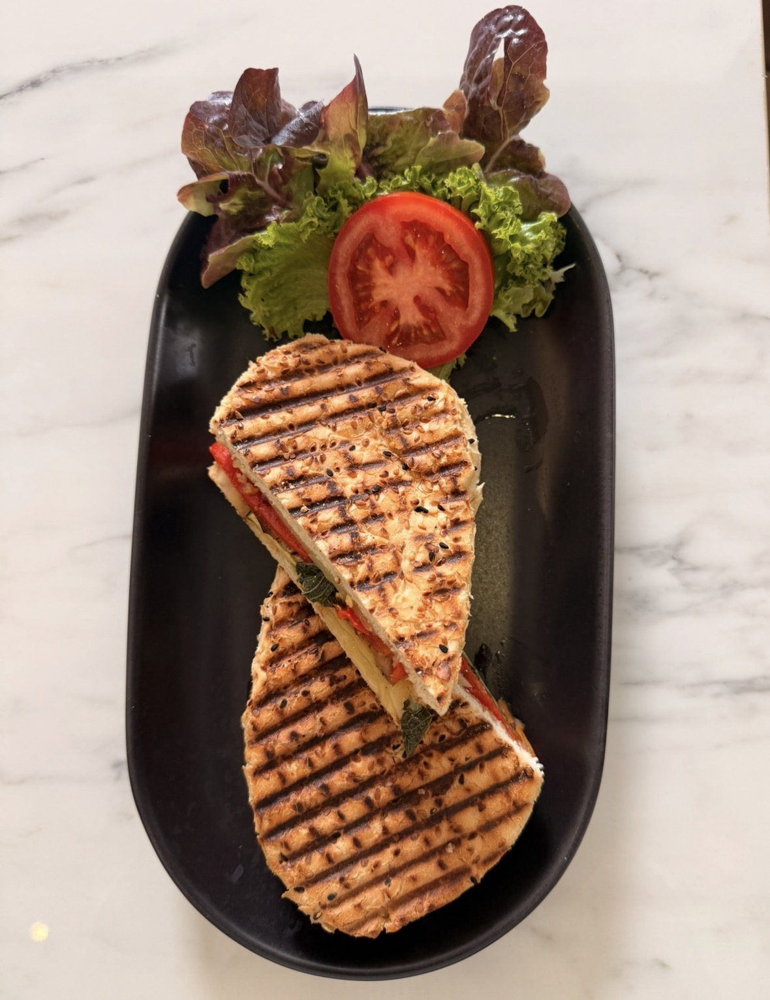
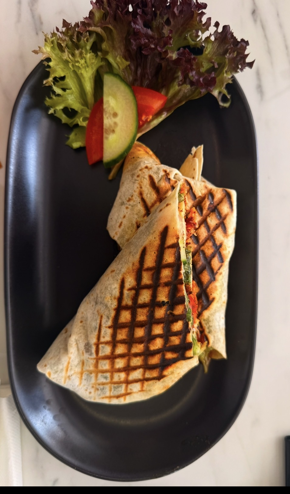
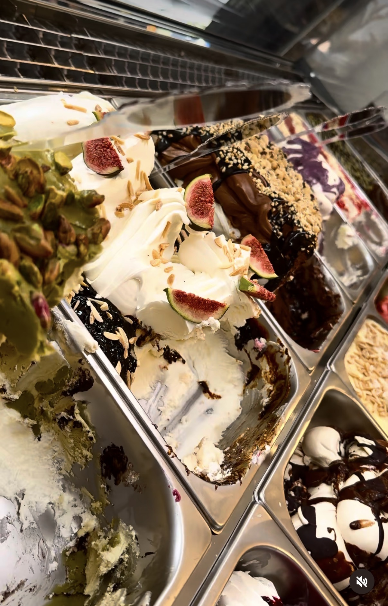
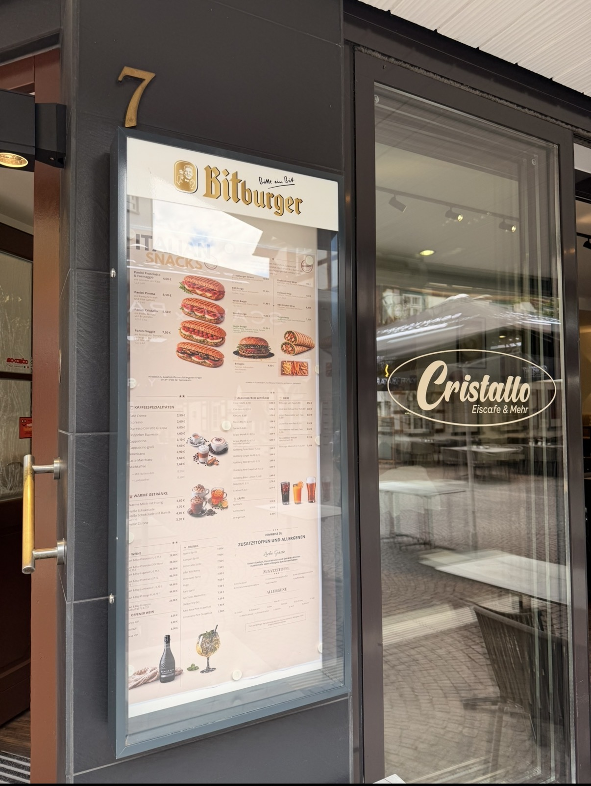

Eiscafé & Mehr in Gießen
Hausgemachtes Eis. Italienische Snacks. Moderne Drinks.
Willkommen bei Cristallo – Ihrem modernen Eiscafé im Herzen von Gießen.
Eiscafé & Mehr in Gießen
Willkommen bei Cristallo – Ihrem modernen Eiscafé im Herzen von Gießen.
Über uns
Unser Eismann Patrik sorgt seit mehr als 18 Jahren mit seinem geheimen Rezept nach original italienischer Rezeptur für genussvollen Eisgeschmack.
Bei Cristallo verbinden wir hausgemachtes Eis mit Panini, Burgern, Wraps, Kaffeespezialitäten und ausgewählten Getränken.

Unser Angebot
Hausgemachte Eisvariationen, Eis Cups und kreative Becher.
Italienische Panini, frisch zubereitet und perfekt für zwischendurch.
Herzhafte Snacks mit frischen Zutaten und hausgemachten Saucen.
Kaffee, Softdrinks, Bier, Wein und moderne Spritz-Drinks.
Einblicke






Kontakt
Adresse: Neuenweg 7, 35390 Gießen
Telefon: 0176 35947733
E-Mail: info@cristalloandmore.de
Instagram: @cristalloandmore
TikTok: @cristallomore
Standort öffnen